NAVIGATION
TOP of Page
HOME Page
CITROEN CARS
About Citroen Cars
Citroen D Series
Citroen ID-19 Specs
Citroen Car Club NSW
My Citroen ID-19
My Citroen Xantia
My Citroen C5
|
About Citroen Cars
I have been interested in Citroens since the mid 60's. At this time a Tasmanian uncle drove a
1963 ID-19 to survey the Murchison Highway. After waiting a quarter of a century, I finally
bought a 1959 ID-19 sedan. I now suspect Citroen ownership may be something of a family thing.
Up until three years ago my daily use car was a 1995 Citroen Xantia.
Citroen D Series - the 'Godess'
In 1938 Citroen president Pierre Boulanger perceived
the need of a replacement for the pre war Traction Avant (Front Wheel
Drive) models. Two VGD - Vehicle a Grand Diffusion - (general
production vehicle) models were envisioned, one being a four cylinder
VGD-120 capable of 120 km/hr, and the other being a six cylinder VGD-135
capable of 135 km/hr. The vehicles were to be released in Jan. 1940,
but WW II intervened to stop development of what was to become the DS.
Andre Lefebvre, an engineer from the aircraft company Voisin,
was recruited in 1942. He had experience in the development of an aerodynamic
car for the 1923 Grand Prix de Tours. The radical body shape of the
D series cars is a credit to designer Flaminio Bertoni's drawings and
Lefebvre's use of a wind tunnel. The car has a low air drag co-efficient
(Cx = 0.35), now only equalled by a modern car.
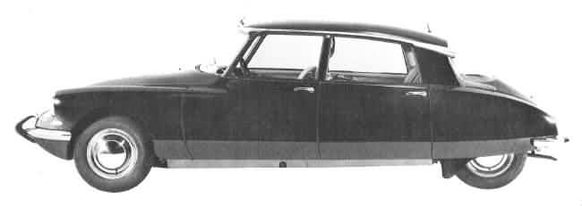 The Citroen DS model of 1955
TOP
HOME
Paul Mages ('the professor') joined the company in 1942
and proposed an oleo suspension system derived from a Lockheed aircraft
suspension strut. Post war suspension development was carried out on
a Traction Avant with the rear suspension modified for self levelling.
Mages re-engineered the strut into a 12 cm sphere incorporating a diaphragm
that enclosed a hemispherical volume of pressurised nitrogen gas.
This enabled both springs and shock absorbers in one unit, giving compliant
long linear travel suspension. At startup a motor driven pump pressurises
the bottom half of the spheres with hydraulic fluid, and the car rises
up to normal ride height. The height can also be set by a lever in the cabin.
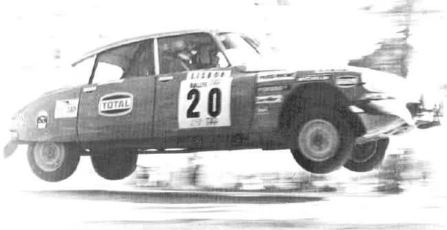 Citroen DS in 1960 Portugese Rally - proving that godesses can fly
TOP
HOME
In 1951 the flat six cylinder motor, developed from the
two cylinder 2CV motor, was dropped. Economic circumstances dictated exclusive
use of the four cylinder motor from the pre-war Traction Avant. This was
modified with a hemi cylinder head for increased power, giving the car
a top speed of 145 kM/h (90 mph). By 1952 DS prototypes in camouflage
were being test driven through the forests surrounding Paris.
The DS-19 was released at the 1955 Paris Motor Show to incredible response,
and introduced radial ply tyres plus a progressive crumple rate chassis
to the motoring public. In 1957 the ID-19, with simplified hydraulics
and softer suspension, was released for the unsealed roads of rural France.
Later D series models incorporated larger engines (1984, 2175 and 2347cc),
four headlights and modern interiors.
The cars have proven themselves in rallies (eg. London to Sydney Car Marathon
- see photos - and the Paris Dakar Rally) and racing (Bathurst 500's).
Several models have featured in several films and TV series (remember
Patrick McGoohans car in TV's 1960's 'Dangerman'). The safari (wagon)
models were favoured as ambulances due to their superb ride qualities
and interior space.
|
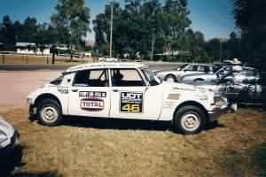
Reddiex' World Cup Rally DS23
|
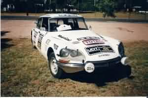
Reddiex' DS23 at Maleny Cit-In
|
TOP
HOME
The luxury DS Pallas sedans soon found use as consular
vehicles. President de Gaulle - an avid Citroen enthusiast - avoided
an ambush in October 1961 when travelling in one across Paris. The incident
became the basis for the film 'The Day of the Jackal'. His presidential
limousine was a 6.53 metre lengthened DS. The ultimate expression of the
D series were the cabriolets by body builder Chapron in the 60's, and
the prototypes for the 1970 Maserati V6 engined SM coupe.
Production of the DS ceased in 1975 with a total of 1,330,755 vehicles
produced. And why the name 'Godess'? It's a French play on words. When
Pierre Boulanger decided to design the D series cars, after the A, B and
C series, he used the initials D.S. to denote the D Series (ie the DS-19,
DS-21, DS-23). In French this is pronounced as Dei - Esse, meaning literally 'Godess'.
|
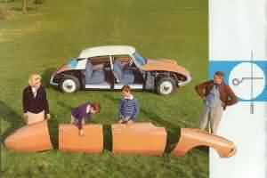
Publicity - removeable panels
|
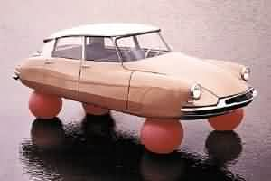
Publicity - oleo suspension
|
TOP
HOME
1959 Citroen ID-19 specifications
| Body: |
Five seat sedan |
Engine Size: |
1.911 Litres |
| Engine: |
Four cylinder inline |
Power: |
46 kW (62 bhp) |
|
OHV pushrod |
at rpm: |
4000 rpm |
|
Removable wet liners |
Bore: |
78 mm |
| Crankshaft: |
Three bearing |
Stroke: |
100 mm |
| Valves: |
Inclined 60 degrees |
Compression: |
6.8:1 |
| Head: |
Cross flow |
Max RPM: |
4500 |
| Combustion: |
Hemispherical |
Battery: |
6 volt 75 amp hr |
| Camshaft: |
Chain driven |
Fuses: |
None |
| Air Filter: |
Dry element |
Fuel: |
Leaded Super |
| Fuel Pump: |
Mechanical |
Fuel Tank: |
63 litres (14 imp gals) |
| Cooling System: |
Pump & thermostat |
Top speed: |
145 km/h (90 mph) |
| Lubrication: |
Gear driven oil pump |
Weight: |
1120 kg (2464 lbs) |
|
No oil filter |
Length: |
4.80 metres |
| Carburettor: |
Solex model 34 |
Width: |
1.79 metres |
|
Single throat downdraft |
Height: |
1.47 metres |
| Starter: |
Button or Crank |
Clearance: |
16 cm - variable |
| Transmission: |
Front wheel drive |
Front Track: |
150 cm |
|
Constant velocity joints |
Rear Track: |
130 cm |
| Clutch: |
Single dry plate |
Turning circle: |
11 metres (36 ft) |
| Gearbox: |
4 speed manual |
Tyres: |
Michelin X 400x165 |
| Synchro: |
2nd, 3rd, 4th gears |
Drag Coefficient: |
Cd = 0.35 |
| Ratios: |
Top 3.30 |
Roof: |
fibreglass |
|
3rd 4.78 |
Steering Wheel: |
Single Spoke |
|
2nd 7.35 |
Chassis: |
steel platform box |
|
1st 13.8 |
|
welded side members |
|
Reverse 14.8 |
|
Removable body panels |
| Final Drive: |
hypoid bevel 3.88:1 |
|
Progressive crumple |
| Front: |
Equal length wishbones |
|
Safety steering wheel |
|
zero steering offset |
Wheels: |
Steel Centre Lock |
| Rear: |
trailing arms |
Suspension: |
Independent 4 wheels |
| Steering: |
Unassisted |
|
Oil-gas spheres |
|
Rack & Pinion |
|
Integral shock absorber |
| Brakes: |
Unassisted |
Anti Roll Bars: |
Front & rear |
| Handbrake: |
Front disc calipers |
Height Control: |
Self Levelling |
| Front Brakes: |
29cm (11.5 in) discs |
|
Adjustable from cabin |
| Rear Brakes: |
25cm (10 in) drums |
|
|
TOP
HOME
The Citroen Car Club of NSW
In the early days Citroen named their production series by letters,
this car being of the D Series (after the A, B and C). DS is pronounced
as 'Dei-Esse' in French, which translates to 'God-ess' in English. The
ID model is from the French 'Idee Desiree' - 'Desirable Idea' in English
ie. the simplified model. The Dutch call the car 'Shark' due to the shape
of the bonnet with the under-bumper air inlet. That would make an Australian
shark a Grey Nurse.
I had been interested in Citroens since buying a red Corgi model
DS sedan whilst at primary school in the mid 1960's. I still have the
car. An uncle in Tasmania also had a 1963 ID-19 which he drove around
South-west Tasmania to build roads such as the Murchison Highway. I now
suspect Citroen ownership may be something of a family thing. After
waiting a quarter of a century, because of more pressing economic realities,
I finally bought one.
|
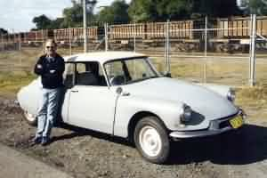
ID-19 Train watching
|
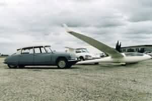
Citroens at Tocumwal Gliding
|
TOP
HOME
After rebuilding the car, I was approached by another club
member to take a test drive, and pick up some cakes on the way. The cake
shop turned out to be in the famed Acland Street of St Kilda, Melbourne.
Overall fuel economy was 8.36 litres/100kM (33.6mpg), including extended
expressway speed running on the Hume Highway. It is the most fatigue free
trip I have ever done to Melbourne.
The Citroen Car Club of NSW organises several annual events. At the club
Christmas party I criticised the fuel calculations in the Observation
Run, to be told by the planner 'If you think you can do better, do it
yourself...'. I have now planned the runs since 1995. Contestants have
to answer fifty cryptic questions whilst navigating the remote roads of
the near-Sydney region. Outings are family oriented, with travel through
scenic country ending at a picnic spot. The next run is now being planned.
The Cit-In is an annual Easter get-together of about one hundred Citroens
from across Australia, hosted sequentially by each state. Travelling to
and from the event is an experience in itself - If not for the Cit-Ins
I would not have visited Gayndah QLD '96) (paddle wheeler on the river),
Renmark SA '97 (wineries), Shepparton VIC '99 (gliding at Tocumwal) and
Jindabyne NSW '00 (climbing Mt Koscziusko plus a return trip via Wilsons
Promontery). 2001 was at Tanunda SA, and 2002 was in Richmond TAS.
|
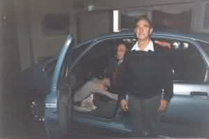
Evaluation Citroen Picasso
|
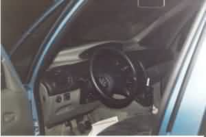
Picasso driving position
|
TOP
HOME
Raids are Citroen rallies using mainly the small 602cc engined
2CV's. Participants worldwide (Germans, Dutch, English, French, Americans)
either import or borrow cars and converge on a different country each
year. They drive off the beaten track for a month eg. up to the top of
Finland, across Slovenia, or the famed crossing of the Sahara. The present
Australian one goes from Alice Springs to Mt Isa, Karumba, Chillagoe,
Cairns, Cape York, Weipa, Cooktown and ending at Trinity Beach.
In August 2000 Shannons car insurance organised the selection of 'Car
of the Century' through the Classic, Vintage and Veterin Touring Motor
Club of Australia. The contenders came down to VW Beetle, Ford model T,
Porsche 911, Mini and the Citroen DS. The Model T was eventually chosen,
with the Beetle coming second and the DS coming third. My ID-19 represented
the oldest DS Citroen in the display, and I got to drive one lap around
the race course with the other cars. The ID-19 had better brakes than
the Porsches. I have fond memories and a small medallion to commemorate
this.
|
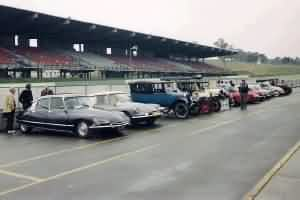
Car of the Century, 2000
|
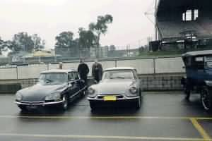
Oldest Citroen, Eastern Creek
|
TOP
HOME
My Citroen ID-19 - The 'Grey Nurse'
The car was built and converted to right hand drive in France.
It was originally sold by Bill Buckle Motors of Sydney in 1959
(note the dealers badge on the rear bumper bar). It was later serviced
by Reynolds Bros Garage of Dandaloo Street, Narromine - there is still
a small remnant of a service sticker on the windscreen. After years of
use in the outback the car was stored with a 1958 ID-19 in a Nyngan shed.
The Nyngan flood in 1989 destroyed the 1958 car, but spared this one.
Next we hear of the car in a report by our club president that he had
heard of two old D series car stored in a shed at Nyngan. Before an
expedition was mounted to recover the vehicles, another member had transported
both vehicles to Gosford. He spent two years partially rebuilding the
good vehicle, using some parts from the 1958 car. The car was used as
regular day to day transport, and as a family transport for an extensive
outback tour.
In August 1994 an advertisement appeared in 'The Chevrons' - the Citroen
Car Club of NSW monthly magazine. It said 'ID 19 1959 grey, very original
and straight, country car, rego till Jan'95, price reduced to $1800
ono Ring Richard'. As I had been in the club a couple of years, it was
about time I bought a Citroen, and so I phoned Richard. He emphasized
the rarity of the car, and purchase was granted on the promise that
I look after the car, and not drive it into the ground.
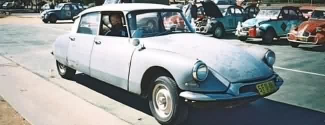 ID-19 at Canberra Cit-In - from a photo by Trevor Astle
TOP
HOME
After several years use, the original engine of 430.000 miles began
blowing smoke. It was time for a rebuild, which I entrusted to European
Autocare at South Penrith. Several months and several thousands of dollars
later, the car re-emerged with a rebuilt engine plus overhauled brakes
and hydraulics. The engine had been completely stripped, with the block
water jacket cleaned by acid etching and refilling of the corroded sections.
New valves, pistons and cylinder liners were ordered from France, and
fitted to a rebuilt head with hardened valve seats to take unleaded fuel.
A harmonic balancer for was added to the engine, with an inspection port
built into the firewall. Extra strengthening of the car was done, making
it suitable for raiding, by bracketing the under-engine cross member and
by adding two ribs between the front seats and the firewall.
|
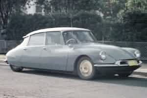
ID-19 at Newcastle
|
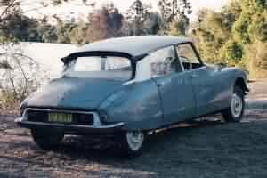
ID-19 at Taree
|
TOP
HOME
The gearbox was showing signs of wear, and was replaced
with a rebuilt four speed synchromesh from a later ID-19. Substantial
noise deadening insulation has been added to the firewall and under
the bonnet, making this one of the quietest D series cars.
I was in a dilemma when trying to replace the original Michelin X series
400X165 radials, as the price was quoted at $480.00 each. This was solved
by Circle Track Wheels at Seven Hills altering the wheel rims to fit
a modern 15" diameter 6" wide 380X205 tyre. After the battery failed
I had trouble finding a 6 volt battery. Replacement came not from a
car, but a fork lift. The deep cycle 19 plate battery fits in the battery
compartment perfectly, and started the car quickly after a freezing
night parked outside at Perisher Valley.
Replacement of the starter motor was a good way to spend a Saturday
afternoon, and to understand how everything on the engine bay was attached
- refer below! It is possible for a non mechanical person to work on
a supposedly complex car.
|
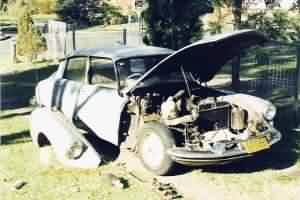
Starter motor replacement
|
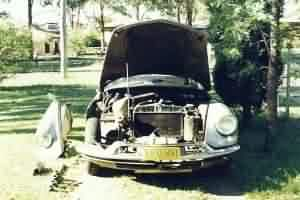
Under the bonnet
|
TOP
HOME
My Citroen Xantia
In 2001, due to a small redundancy windfall, I finally bought
a 1995 Citroen Xantia for $12,000. This car had 112,000 kM on the
clock when I bought it, and now has 301,000 kM. The biggest expense is
the replacement of the brake pads and rotors, but what magnificent brakes!
This is the only car I have owned that brakes really well. The car also
has advanced safety and performance features including a variable height
oleo-pneumatic suspension, a high pressure 4 wheel disk braking system
incorporating ABS, drivers Airbag, passive four wheel steering and an
integral roll cage.
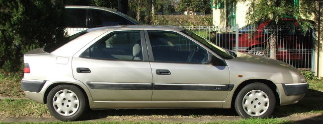 Citroen Xantia 1995 Image Hatchback
The car is comfortable, safe and fast. The only incident
I had with the car is when the front suspension struts failed, and crumpled
the bonnet. Apparently they need to be replaced every 10 years due to
fatigue. The modern Peugeots also suffer the same problem. The replacement
cost for the struts compared with the costs of changing shock absorbers
in a normal car. The muffler and alternator are still the original, so
that reduces the cost of ownership in some small degree. I have appeared
at a couple of Cit-Ins with this car, and it has been to Tasmania for
the Richmond Cit-In.
The fuel efficiency of the Xantia is 9.5 litres/100 kM on the daily trip
to Richmond. Here are some fuel efficiency figures for the Xantia on two
trips. The first is a weeks travel to work from Mt Druitt to work at Richmond
plus a return trip to Newcastle. The second is a trip from Sydney to Newcastle,
Taree and back, beginning and ending with a weeks travel to work. All trips
were driven briskly at appropriate legal speeds.
| Date |
Start |
Finish |
kM |
Litres |
L/100kM |
MPG |
| 21/08/06 |
Richmond |
Richmond |
747.4 |
61.76 |
8.26 |
34.00 |
| 03/09/06 |
Richmond |
Lambton |
691.4 |
52.86 |
7.64 |
36.75 |
| 05/09/06 |
Lambton |
Richmond |
364.0 |
29.51 |
8.11 |
34.66 |
TOP
HOME
At 320,000 kM the car has now been sold, for scrap value.
The new owner is another member of the Citroen Car Club,
who is restoring it to a near original condition.
|
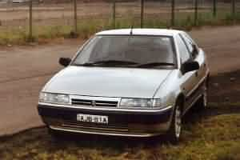
Citroen Xantia (2001-2011)
|
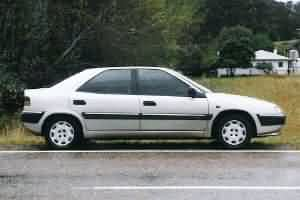
Xantia on Cit-In Tasmania
|
|
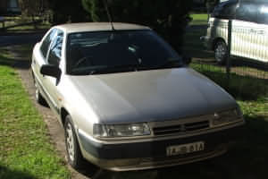
Xantia front
|
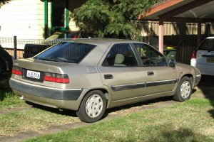
Xantia rear
|
TOP
HOME
My Citroen C5
In late 2016 I had been dreaming of getting a car to replace my long gone
Xantia, as my principle good car was now an aging 2006 Toyota Corolla.
Searching the motor advertising on the net, I found a used 2010 Citroen C5
with only 26,000km on the clock for $19,950. At this price I couln't pass
it up, so I co-opted Bruce Elsegood from the Citroen Car to do a check.
We went to the Oldtimer Car Centre at Marrickville and Bruce was quite
impressed. His recommendation: "You would be mad not to buy it". I returned
to the office immediately, talked the price down $490 and placed a deposit.
I picked it up, clean from detailing a week later.
 Citroen C5 2010 X7 Sedan Citroen C5 2010 X7 Sedan
As per the typical Citroen image the car is comfortable, safe and fast. I also
enjoy the faux leather interior and the huge boot space - lots of room for
telescopes and bicycles. It has taken a little while to learn all the controls
including the speed limiter and cruise control. The interior is luxurious and
intended for easy long distance travel, which was my prime purchase reason. The
engine is a two litre turbo diesel, which is matched to a five speed automatic
gearbox. According to my spreadsheet this gives an overall fuel economy of 6.5
litres/100km. It will get down close to 5 l/100km on a trip to Taree. I look
forward to many more years of ownership. The Corolla has now been sold to the
children of a neighbour and I am back to being a uniquely Citroen owner.
TOP
HOME
|